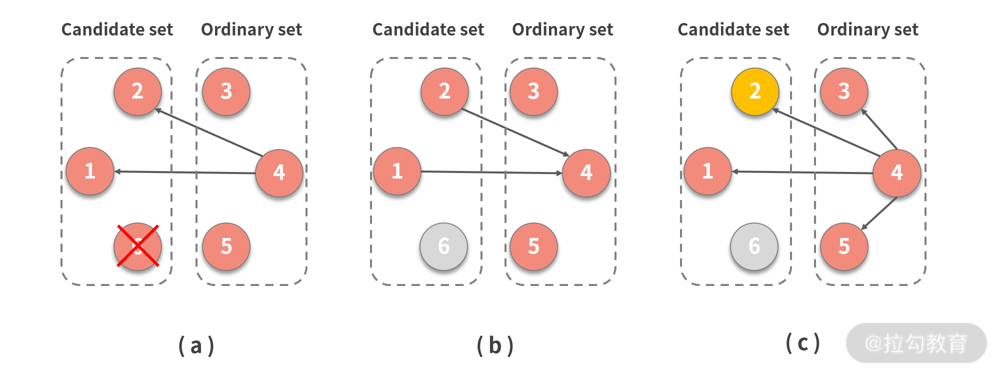
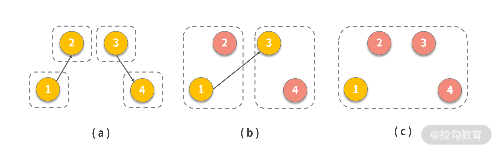
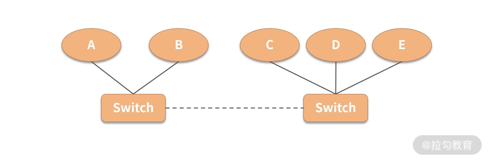

15 领导选举：如何在分布式系统内安全地协调操作？¶
这一讲我们来聊聊如何在分布式数据库，乃至一般性的分布式系统内同步数据。
不知道你是否发现这样一种事实：同步数据是一种代价非常高昂的操作，如果同步过程中需要所有参与的节点互相进行操作，那么其通信开销会非常巨大。
如下图所示，随着参与节点的增加，其通信成本逐步提高，最终一定会导致数据在集群内不一致。尤其在超大型和地理空间上分散的集群网络中，此现象会进一步被放大。

为了减少同步通信开销和参与节点的数量，一些算法引入了“领导者”（有时称为协调者），负责协调分布式系统内的数据同步。
领导选举¶
通常，分布式系统中所有节点都是平等的关系，任何节点都可以承担领导角色。节点一旦成为领导，一般在相当长的时间内会一直承担领导的角色，但这不是一个永久性的角色。原因也比较容易想到：节点会崩溃，从而不能履行领导职责。
现实生活中，如果你的领导由于个人变故无法履职，组织内会重新选择一个人来替代他。同样，在领导节点崩溃之后，任何其他节点都可以开始新一轮的选举。如果当选，就承担领导责任，并继续从前一个领导节点退出的位置开始工作。
领导节点起到协调整个集群的作用，其一般职责包括：
- 控制广播消息的总顺序；
- 收集并保存全局状态；
- 接收消息，并在节点之间传播和同步它们；
- 进行系统重置，一般是在发生故障后、初始化期间，或重要系统状态更新时操作。
集群并不会经常进行领导选举流程，一般会在如下两个场景中触发选举：
- 在初始化时触发选举，称为首次选举领导；
- 当前一位领导者崩溃或无法通信时。
选举算法中的关键属性¶
当集群进入选举流程后，其中的节点会应用选举算法来进行领导选举，而这些选举算法一般包含两个属性： “安全性”（Safety）和 “活跃性”（Liveness）。它们是两个非常重要且比较基础的属性，最早由莱斯利·兰伯特（ L.Lamport——分布式计算的开创者）提出。
在解释这两个属性的含义之前，我们先想象一下工作生活中是如何选举领导的？领导通常来源于一组候选人，选举规则需包含如下两点。
- 选举必须产生一个领导。如果有两个领导，那么下属应该听从他们中谁的指示呢？领导选举本来是解决协调问题的，而多个领导不仅没有解决这个问题，反而带来了更大问题。
- 选举必须有结果。较为理想的状态是：领导选举需要在大家可以接受的时间内有结果。如果领导长时间没有被选举出来，那么必然造成该组织无法开展正常的工作。因为没人来协调和安排工作，整个组织内部会变得混乱无序。
以上两个规则正好对应到算法的两个属性上。
其中第一个规则对应了算法的“安全性”（Safety），它保证一次最多只有一个领导者，同时完全消除“脑裂”（Split Brain）情况的可能性（集群被分成两个以上部分，并产生多个互相不知道对方存在的领导节点）。然而，在实践中，许多领导人选举算法违反了这个属性。下面在介绍“脑裂”的时候会详细讲解如何解决这个问题。
第二个规则代表了选举算法的“活跃性”（Liveness），它保证了在绝大多数时候，集群内都会有一个领导者，选举最终会完成并产生这个领导，即系统不应无限期地处于选举状态。
满足了以上两个属性的算法，我们才称其为有效的领导选举算法。
领导选举与分布式锁¶
领导选举和分布式锁在算法层面有很高的重合性，前者选择一个节点作为领导，而后者则是作为锁持有者，因此很多研发人员经常将二者混为一谈。那么现在，让我们比较一下领导者选举和分布式锁的区别。
分布式锁是保证在并发环境中，一些互斥的资源，比如事务、共享变量等，同一时间内只能有一个节点进行操作。它也需要满足上文提到的安全性和活跃性，即排他锁每次只能分配给一个节点，同时该节点不会无限期持有锁。
从理论上看，虽然它们有很多相似之处，但也有比较明显的区别。如果一个节点持有排他锁，那么对于其他节点来说，不需要知道谁现在持有这个锁，只要满足锁最终将被释放，允许其他人获得它，这就是前文所说的“活跃性”。
与此相反，选举过程完全不是这样，集群中的节点必须要知道目前系统中谁是领导节点，因为集群中其他节点需要感知领导节点的活性，从而判断是否需要进入到选举流程中。因此，新当选的领导人必须将自己的角色告知给它的下属。
另一个差异是：如果分布式锁算法对特定的节点或节点组有偏好，也就是非公平锁，它最终会导致一些非优先节点永远都获得不了共享资源，这与“活跃性”是矛盾的。但与其相反，我们一般希望领导节点尽可能长时间地担任领导角色，直到它停止或崩溃，因为“老”领导者更受大家的欢迎。
解决单点问题¶
在分布式系统中，具有稳定性的领导者有助于减小远程节点的状态同步消耗，减少交换消息的数量；同时一些操作可以在单一的领导节点内部进行，避免在集群内进行同步操作。在采用领导机制的系统中，一个潜在的问题是由于领导者是单节点，故其可能成为性能瓶颈。
为了克服这一点，许多系统将数据划分为不相交的独立副本集，每个副本集都有自己的领导者，而不是只有一个全局领导者，使用这种方法的系统代表是 Spanner（将在第 17 讲“分布式事务”中介绍）。由于每个领导节点都有失败的可能，因此必须检测、报告，当发生此种情况时，一个系统必须选出另一个领导人来取代失败的领导人。
上面整体介绍了领导选举的使用场景和算法特点，那么领导选举是怎样操作的呢？
典型的算法包括：Bully 算法、ZAB（Zookeeper Atomic Broadcast）、Multi-Paxos 和 RAFT 等。但是除了 Bully 算法外，其他算法都使用自己独特的方法来同时解决领导者选举、故障检测和解决竞争领导者节点之间的冲突。所以它们的内涵要远远大于领导选举这个范畴，限于篇幅问题，我将会在下一讲详细介绍。
基于以上的原因，下面我将使用 Bully 算法及其改进算法来举例说明典型的领导选举流程。Bully 算法简单且容易进行收敛，可以很好地满足“活跃性”；同时在无网络分区的情况下，也能很好地满足“安全性”。
经典领导选举算法：Bully 算法¶
这是最常用的一种领导选举算法，它使用节点 ID 的大小来选举新领导者。在所有活跃的节点中，选取节点 ID 最大或者最小的节点为主节点。
以下采用“ID 越大优先级越高”的逻辑来解释算法：
每个节点都会获得分配给它的唯一 ID。在选举期间，ID 最大的节点成为领导者。因为 ID 最大的节点“逼迫”其他节点接受它成为领导者，它也被称为君主制领导人选举：类似于各国王室中的领导人继承顺位，由顺位最高的皇室成员来继承皇位。如果某个节点意识到系统中没有领导者，则开始选举，或者先前的领导者已经停止响应请求。
算法包含 4 个步骤：
- 集群中每个活着的节点查找比自己 ID 大的节点，如果不存在则向其他节点发送 Victory 消息，表明自己为领导节点；
- 如果存在比自己 ID 大的节点，则向这些节点发送 Election 消息，并等待响应；
- 如果在给定的时间内，没有收到这些节点回复的消息，则自己成为领导节点，并向比自己 ID 小的节点发送 Victory 消息；
- 节点收到比自己 ID 小的节点发送的 Election 消息，则回复 Alive 消息。

上图举例说明了 Bully 领导者选举算法，其中：
- 节点 3 注意到先前的领导者 6 已经崩溃，并且通过向比自己 ID 更大的节点发送选举消息来开始新的选举；
- 4 和 5 以 Alive 响应，因为它们的 ID 比 3 更大；
- 3 通知在这一轮中作出响应的最大 ID 节点是 5；
- 5 被选为新领导人，它广播选举信息，通知排名较低的节点选举结果。
这种算法的一个明显问题是：它违反了“安全性”原则（即一次最多只能选出一位领导人）。在存在网络分区的情况下，在节点被分成两个或多个独立工作的子集的情况下，每个子集选举其领导者。
该算法的另一个问题是：它对 ID 较大的节点有强烈的偏好，但是如果它们不稳定，会严重威胁选举的稳定性，并可能导致不稳定节点永久性地连任。即不稳定的高排名节点提出自己作为领导者，不久之后失败，但是在新一轮选举中又赢得选举，然后再次失败，选举过程就会如此重复而不能结束。这种情况，可以通过监控节点的存活性指标，并在选举期间根据这些指标来评价节点的活性，从而解决该问题。
Bully 算法的改进¶
Bully 算法虽然经典，但由于其相对简单，在实际应用中往往不能得到良好的效果。因此在分布式数据库中，我们会看到如下所述的多种演进版本来解决真实环境中的一些问题，但需要注意的是，其核心依然是经典的 Bully 算法。
改进一：故障转移节点列表¶
有许多版本的 Bully 算法的变种，用来改善它在各种场景下的表现。例如，我们可以使用多个备选节点作为在发生领导节点崩溃后的故障转移目标，从而缩短重选时间。每个当选的领导者都提供一个故障转移节点列表。当集群中的节点检测到领导者异常时，它通过向该领导节点提供的候选列表中排名最高的候选人发送信息，开始新一轮选举。如果其中一位候选人当选，它就会成为新的领导人，而无须经历完整的选举。
如果已经检测到领导者故障的进程本身是列表中排名最高的进程，它可以立即通知其他节点自己就是新的领导者。

上图显示了采用这种优化方式的过程，其中：
- 6 是具有指定候选列表 {5，4} 的领导者，它崩溃退出，3 注意到该故障，并与列表中具有最高等级的备选节点 5 联系；
- 5 响应 3，表示它是 Alive 的，从而防止 3 与备选列表中的其他节点联系；
- 5 通知其他节点它是新的领导者。
因此，如果备选列表中，第一个节点是活跃的，我们在选举期间需要的步骤就会更少。
改进二：节点分角色¶
另一种算法试图通过将节点分成 候选 和 普通 两个子集来降低消息数量，其中只有一个候选节点可以最终成为领导者。普通节点联系候选节点、从它们之中选择优先级最高的节点作为领导者，然后将选举结果通知其余节点。
为了解决并发选举的问题，该算法引入了一个随机的启动延迟，从而使不同节点产生了不同的启动时间，最终导致其中一个节点在其他节点之前发起了选举。该延迟时间通常大于消息在节点间往返时间。具有较高优先级的节点具有较低的延迟，较低优先级节点延迟往往很大。
 上图显示了选举过程的步骤，其中：
{kind=link}
- 节点 4 来自普通的集合，它发现了崩溃的领导者 6，于是通过联系候选集合中的所有剩余节点来开始新一轮选举；
- 候选节点响应并告知 4 它们仍然活着；
- 4 通知所有节点新的领导者是 2。
该算法减小了领导选举中参与节点的数量，从而加快了在大型集群中该算法收敛的速度。
改进三：邀请算法¶
邀请算法允许节点“邀请”其他进程加入它们的组，而不是进行组间优先级排序。该算法允许定义多个领导者，从而形成每个组都有其自己的领导者的局面。每个节点开始时都是一个新组的领导者，其中唯一的成员就是该节点本身。
组领导者联系不属于它们组内的其他节点，并邀请它们加入该组。如果受邀节点本身是领导者，则合并两个组；否则，受邀节点回复它所在组的组长 ID，允许两个组长直接取得联系并合并组，这样大大减少了合并的操作步骤。
 上图显示了邀请算法的执行步骤，其中：
{kind=link}
- 四个节点形成四个独立组，每个节点都是所在组的领导，1 邀请 2 加入其组，3 邀请 4 加入其组；
- 2 加入节点 1 的组，并且 4 加入节点 3 的组，1 为第一组组长，联系人另一组组长 3，剩余组成员（在本例中为 4 个）获知了新的组长 1；
- 合并两个组，并且 1 成为扩展组的领导者。
由于组被合并，不管是发起合并的组长成为新的领导，还是另一个组长成为新的领导。为了将合并组所需的消息数量保持在最小，一般选择具有较大 ID 的组长的领导者成为新组的领导者，这样，只有来自较小 ID 组的节点需要更新领导者。
与所讨论的其他算法类似，该算法采用“分而治之”的方法来收敛领导选举。邀请算法允许创建节点组并合并它们，而不必从头开始触发新的选举，这样就减少了完成选举所需的消息数量。
改进四：环形算法¶
在环形算法中，系统中的所有节点形成环，并且每个节点都知道该环形拓扑结构，了解其前后邻居。当节点检测到领导者失败时，它开始新的选举，选举消息在整个环中转发，方式为：每个节点联系它的后继节点（环中离它最近的下一节点）。如果该节点不可用，则跳过该节点，并尝试联系环中其后的节点，直到最终它们中的一个有回应。
节点联系它们的兄弟节点，收集所有活跃的节点从而形成可用的节点集。在将该节点集传递到下一个节点之前，该节点将自己添加到集合中。
该算法通过完全遍历该环来进行。当消息返回到开始选举的节点时，从活跃集合中选择排名最高的节点作为领导者。
 如上图所示，你可以看到这样一个遍历的例子：
如上图所示，你可以看到这样一个遍历的例子：
- 先前的领导 6 失败了，环中每个节点都从自己的角度保存了一份当前环的拓扑结构；
- 以 3 为例，说明查找新领导的流程，3 通过开始遍历来发起选举轮次，在每一步中，节点都按照既定路线进行遍历操作，5 不能到 6，所以跳过，直接到 1；
- 由于 5 是具有最高等级的节点，3 发起另一轮消息，分发关于新领导者的信息。
该算法的一个优化方法是每个节点只发布它认为排名最高的节点，而不是一组活跃的节点，以节省空间：因为 Max 最大值函数是遵循交换率的，也就是知道一个最大值就足够了。当算法返回到已经开始选举的节点时，最后就得到了 ID 最大的节点。
另外由于环可以被拆分为两个或更多个部分，每个部分就会选举自己的领导者，这种算法也不具备“安全性”。
如前所述，要使具有领导的系统正常运行，我们需要知道当前领导的状态。因此，为了系统整体的稳定性，领导者必须保证是一直活跃的，并且能够履行其职责。为了检测领导是否崩溃，可以使用我上一讲介绍过的故障检测算法。
解决选举算法中的脑裂问题¶
我们需要注意到，在本讲中讨论的所有算法都容易出现脑裂的问题，即最终可能会在独立的两个子网中出现两个领导者，而这两个领导并不知道对方的存在。
为了避免脑裂问题，我们一般需要引入法定人数来选举领导。比如 Elasticsearch 选举集群领导，就使用 Bully 算法结合最小法定人数来解决脑裂问题。
 如上图所示，目前有 2 个网络、5 个节点，假定最小法定人数是 3。A 目前作为集群的领导，A、B 在一个网络，C、D 和 E 在另外一个网络，两个网络被连接在一起。
如上图所示，目前有 2 个网络、5 个节点，假定最小法定人数是 3。A 目前作为集群的领导，A、B 在一个网络，C、D 和 E 在另外一个网络，两个网络被连接在一起。
当这个连接失败后，A、B 还能连接彼此，但与 C、D 和 E 失去了联系。同样， C、D 和 E 也能知道彼此，但无法连接到 A 和 B。
 此时，C、D 和 E 无法连接原有的领导 A。同时它们三个满足最小法定人数 3，故开始进行新一轮的选举。假设 C 被选举为新的领导，这三个节点就可以正常进行工作了。
{kind=link}
而在另外一个网络中，虽然 A 是曾经的领导，但是这个网络内节点数量是 2，小于最小法定人数。故 A 会主动放弃其领导角色，从而导致该网络中的节点被标记为不可用，从而拒绝提供服务。这样就有效地避免了脑裂带来的问题。
总结¶
领导选举是分布式系统中的一个重要课题，这是因为使用固定的领导者非常有助于减少协调开销并提高系统的性能。选举过程可能成本很高，但由于不是很频繁，因此不会对整个系统性能产生严重影响。单一的领导者可能成为瓶颈，但我们可以通过对数据进行分区并使用每个分区的领导者来解决这个问题，或对不同的操作使用不同的领导者。
许多共识算法，包括 Multi-Paxos 和 RAFT 一般都有选举的过程。但是共识算法的内涵相比于单纯的选举算法更为丰富，所以我在“19 | 共识算法：一次性说清楚 Paxos、Raft 等算法的区别”中会专门来和你讨论。
能力越强，责任越大。领导节点虽然解决了系统内数据同步的问题，但由于其承担重大责任，一旦发生问题将会产生严重的影响。故一个稳定高效的选举算法是领导模式的关键。
领导者的状态可能在节点不知道的情况下发生变化，所以集群内节点需要及时了解领导节点是否仍然活跃。为了实现这一点，我们需要将领导选举与故障检测结合起来。例如，稳定领导者选举算法使用具有独特的稳定领导者和基于超时的故障检测的轮次，以保证领导者可以被重新选举，从而保留它的领导地位。前提是只要它不会崩溃，并且可以访问。